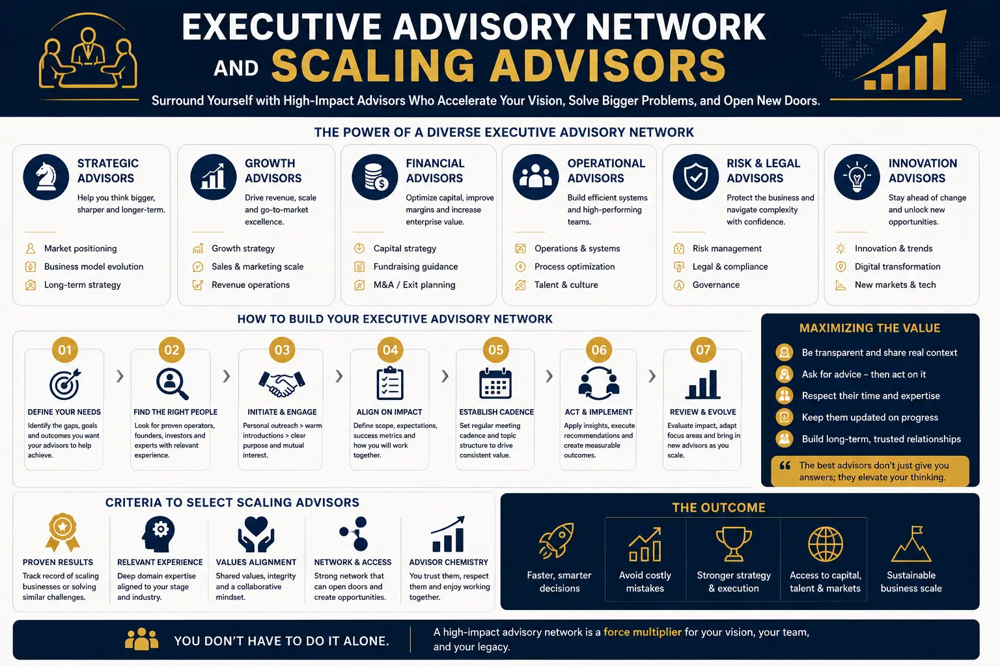
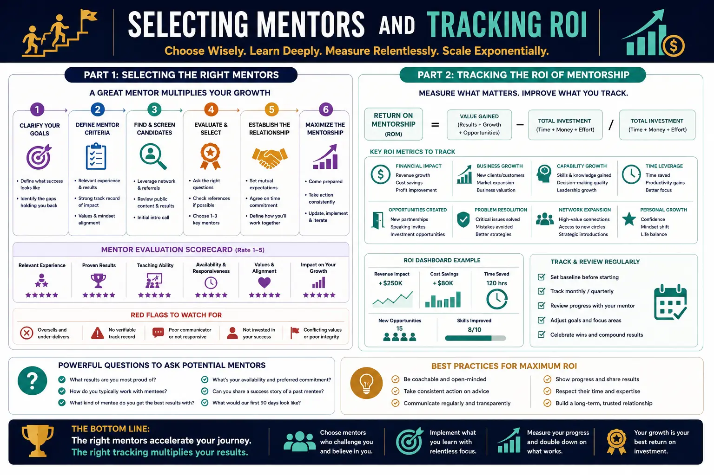

How to Vet and Select a Mastermind or Personal Business Growth Coach for System Scale
The Scaling Paradox and the Need for Elite Mentorship
Every successful founder eventually hits an invisible wall where personal effort no longer translates into business growth. In the early stages of building a company, the founder's grit, technical skill, and long hours are the primary drivers of success. However, as the organization grows, this hands-on approach becomes the firm’s ultimate bottleneck. Many business owners attempt to solve this problem by searching for a personal development coach near me on search engines, hoping that local guidance can help them manage their stress and optimize their personal calendar. While local support is valuable, scaling a business beyond the owner's personal capacity requires far more than generic time management advice. It demands a partnership with a dedicated Personal Growth Coach who specializes in systemic leverage, delegation frameworks, and leadership development.
Scaling is a complex process of building repeatable systems, automating processes, and learning how to lead through others. It requires the founder to shift from being a hands-on technician to acting as a strategic systems architect. In this high-stakes transition, selecting operational growth mentors who have successfully walked this path is essential. A specialized growth mentor helps the founder identify personal bottlenecks, redefine their daily focus, and design an operational structure that allows the business to scale independently of the founder's physical hours. By focusing on systems, leadership scale, and structural leverage, founders can transition from owning a high-paying job to owning a scalable enterprise asset that generates predictable value and operates smoothly even in the founder's absence.
Why Generalist Business Coaches Fail High-Growth Founders
The market is saturated with business coaches who offer generic, one-size-fits-all advice on sales, marketing, and leadership. While these generalist coaches can help early-stage solo operators organize their initial sales calls, they are often out of their depth when dealing with the operational complexities of a scaling company. For a founder leading a business with significant revenue and complex workflows, general advice can lead to wasted capital and operational confusion. To achieve system scale, founders need to move past generalists and focus on Hiring Small Business Scaling Advisors who have a documented track record of building and scaling high-margin businesses.
Generalist coaches often focus on motivation and basic accountability, whereas scaling advisors focus on systems architecture, client delivery automation, and unit economics. Hiring Small Business Scaling Advisors ensures that the guidance you receive is based on practical, operational experience rather than theoretical models. These specialists help you productize your services, build standard operating procedures (SOPs), and implement advanced automation tools that reduce team friction and increase net margins. Furthermore, elite scaling advisors are often connected to corporate consulting networks, allowing them to bring corporate-grade operational strategies, compliance standards, and strategic alliance opportunities to your growing business, which further prepares the company for eventual valuation expansion or acquisition.
Executive Advisory Network Vetting: Navigating Mastermind Options
For many founders, the most effective path to scaling is a combination of individual coaching and peer mastermind groups. High-tier masterminds and advisory networks offer access to collective intelligence, industry benchmarks, and strategic partnerships. However, the market for masterminds is highly fragmented, with many groups acting as glorified networking clubs rather than high-performance growth accelerators. To find the right group, founders must utilize a rigorous process of Executive Advisory Network Vetting. This vetting process involves looking closely at the operational background of the facilitator, the exact criteria for member admission, and the structured focus of the curriculum.
When conducting Executive Advisory Network Vetting, the primary factor to analyze is the caliber of the active members. A high-value mastermind must be composed of peers who are operating at or above your current level of scale. If the group is filled with early-stage operators, you will spend your time offering advice rather than receiving strategic insights. A premium network should facilitate advanced discussions around delegation, corporate governance, capital allocation, and risk management. Furthermore, the facilitator must lead with a structured methodology, using data-driven agendas and focused problem-solving sessions rather than open-ended, casual conversations. Vetting the network ensures that your mastermind investment translates into actionable operational growth rather than simple social networking.
The Core Elements of Premium Business growth programs for founders
A high-quality scaling relationship is usually supported by structured Business growth programs for founders that combine elite coaching, curriculum-driven education, and peer-to-peer collaboration. These programs should provide a clear, step-by-step roadmap that guides the founder through the phases of systemization, team building, and market expansion. Instead of offering ad-hoc advice, structured programs guide founders through a systematic curriculum designed to upgrade their leadership capabilities and optimize their firm's operational workflows.
When evaluating different Business growth programs for founders, look for those that provide hands-on implementation support, templates, and pre-built operational blueprints. Many programs fail because they provide high-level theory without showing founders how to implement the systems in their specific businesses. A high-value program will include detailed modules on automation, standard operating procedures, financial modeling, and marketing systems. It should also offer access to specialized advisors who can troubleshoot issues and provide feedback on your operational design. This structured approach helps founders avoid common scaling mistakes, keeping the business lean, highly profitable, and focused on strategic growth.
High-Performance Alignment
Partnering with a dedicated Personal Growth Coach helps you align your personal leadership capabilities with your firm’s scaling systems. This alignment ensures you develop the mindset and delegation skills needed to lead a high-margin enterprise rather than remaining trapped in daily operations.
Operational Systems Design
Focusing on Hiring Small Business Scaling Advisors gives you access to pre-built templates, automated client onboarding systems, and operational blueprints. These specialists help you productize your knowledge and build systems that decouple revenue from your personal hours.
Accountability Frameworks
Implementing executive accountability metrics keeps you focused on executing your scaling plan. These metrics track systems deployment, SOP creation, and sales funnel performance, preventing you from getting bogged down in daily firefighting.
Quantitative ROI Tracking
Establishing a system for tracking executive mentorship ROI ensures your advisory investment pays off. By measuring financial growth and operational efficiency gains against your coaching fees, you can quantitatively justify your scaling program.

tracking executive mentorship ROI: Defining Success Metrics
One of the most common complaints about the coaching industry is the lack of measurable outcomes. Many founders invest tens of thousands of dollars in high-ticket masterminds or individual coaches without ever knowing if the investment paid off. To prevent this, it is critical to implement a systematic process for tracking executive mentorship ROI. Before signing a contract, you and your growth advisor must define clear, quantitative metrics that will determine the success of the relationship. These metrics should align with your primary scaling objectives, whether that means growing monthly recurring revenue, expanding net margins, or reducing the number of hours the founder spends on daily delivery.
To succeed with tracking executive mentorship ROI, you must track both financial and operational key performance indicators. Financial metrics might include the increase in customer lifetime value, the reduction in client acquisition cost, or the growth in overall enterprise valuation. Operational metrics might include the implementation speed of new systems, the reduction in delivery errors, or the successful delegation of key roles to team members. The coach or advisor must implement executive accountability metrics that keep the founder focused on executing these scaling milestones. If the financial and operational value of the improvements exceeds the cost of the coaching fees and growth programs, the advisory relationship has delivered a positive ROI, justifying the investment.
selecting operational growth mentors for System and Leadership Alignment
Finding a mentor who possesses the right technical skills is only half the battle; they must also align with your leadership style, personal values, and long-term vision. The process of selecting operational growth mentors requires a careful evaluation of their personal philosophy, coaching style, and communication approach. A great mentor should challenge your assumptions, push you out of your comfort zone, and hold you accountable, while also acting as a trusted advisor who understands the emotional and psychological pressures of leadership.
When selecting operational growth mentors, look for individuals who have built businesses that match your desired lifestyle and business model. For example, if your goal is to build a lean, high-margin micro-agency that runs with minimal employees, you should avoid advisors who specialize in building large, VC-backed enterprises with hundreds of staff. Your mentor’s past success should match your future goals. Furthermore, they must understand the psychological side of scaling, helping you overcome the fear of delegation, let go of control, and develop the mental resilience needed to guide your company through rapid growth. A mentor who aligns with your values will not only help you scale your business, but will also ensure that your business growth supports your personal freedom and well-being.
Incorporating executive accountability metrics
Many founders struggle to scale because they fail to execute the plans they create. It is easy to design a scaling strategy on paper, but executing it while managing the daily demands of a business is extremely challenging. This is where executive accountability metrics become essential. A high-performing coach or mastermind facilitator will implement structured accountability frameworks that track execution speed, milestone completion, and progress toward scaling goals. These metrics act as an early-warning system, alerting the founder and the coach when strategic execution is falling behind daily firefighting.
Effective executive accountability metrics should be simple, measurable, and tracked on a weekly or bi-weekly dashboard. They should focus on leading indicators of scale, such as the number of SOPs documented, the deployment of new automation tools, the training of new team members, and the launch of new marketing funnels. By tracking these execution metrics, the founder remains focused on high-level strategic tasks rather than getting bogged down in daily operations. The coach uses these metrics to guide coaching sessions, troubleshooting bottlenecks and celebrating milestones, ensuring the founder stays on track to build a systemized, independent business.
Peer Advisory Board Vetting
Our structured approach to Executive Advisory Network Vetting ensures you join an elite mastermind. We evaluate the operational profile of members, the facilitator's track record, and the accountability systems to guarantee you connect with high-caliber peers.
Operational Mentorship Selection
When selecting operational growth mentors, we help you find specialists who match your business model. Whether you want to build a lean micro-agency or scale an enterprise consulting firm, we align you with mentors who have done it before.
Corporate Network Integration
Vetted advisors connect you to global corporate consulting networks. These networks provide access to institutional operational benchmarks, corporate governance frameworks, and strategic partners, preparing your business for rapid market expansion.

The Local vs. Global Coach Search: Beyond Proximity
Many founders make the mistake of limiting their search for a mentor to their local area, using search queries like personal development coach near me. While having a coach in the same city allows for face-to-face meetings, it severely limits the pool of available talent. Scaling a high-margin business requires highly specialized operational expertise that is rarely found in a local search. The ideal growth coach must have deep experience in systems engineering, digital sales funnels, and scalable delivery, regardless of their physical location. By expanding your search globally, you gain access to the world’s best minds, ensuring you find a mentor who has built exactly what you want to build.
Expanding your search beyond a personal development coach near me allows you to access elite, global Business growth programs for founders. These international programs bring together founders from diverse geographic locations and industries, fostering a rich environment of shared learning and peer support. Furthermore, global advisors are deeply integrated into international corporate consulting networks, providing you with insights into global market trends, foreign investment opportunities, and cross-border strategic alliances. When selecting operational growth mentors, prioritize operational alignment, industry experience, and systems expertise over geographic proximity. In today's digital world, a virtual relationship with a world-class growth mentor will deliver far greater value and a much higher return than a local face-to-face relationship with an unspecialized generalist.
Advanced Vetting Strategies: Analyzing Past Performance and Peer Groups
To protect your scaling investment, you must conduct deep diligence on any prospective coach, mastermind, or advisory group. When performing Executive Advisory Network Vetting, do not rely solely on the testimonials published on the provider's website. Instead, request direct references and ask to speak with current or past members of the network. Ask these references detailed questions about the facilitator's coaching style, the quality of the peer discussions, and the responsiveness of the support team. Vetting the network in this way helps you identify red flags and choose an advisory circle that will support your scaling goals.
When speaking with references, ask specifically about how the coach or mastermind handles tracking executive mentorship ROI. A high-tier provider should be proud of their tracking systems and happy to share examples of how they measure client success. If a coach or program coordinator is vague about how they track progress, or if they do not implement clear executive accountability metrics, it is a sign that they may not be focused on delivering measurable outcomes. When Hiring Small Business Scaling Advisors, demand to see case studies that show clear, quantitative growth in net profits, client retention rates, and founder time-savings. Analyzing past performance ensures you partner with an advisor who delivers real business value.
Designing the Integration and Onboarding Phase
Once you have selected a coach or mastermind, the next step is to ensure a smooth onboarding and integration phase. A great Personal Growth Coach will begin the relationship with a comprehensive audit of your current business operations, leadership style, and personal schedule. This audit helps identify immediate bottlenecks, such as manual admin work, lack of documented processes, or personal time management issues. The coach will then work with you to design a custom scaling blueprint, setting clear milestones and establishing the tracking dashboards that will guide your weekly or bi-weekly coaching sessions.
A successful integration also requires setting up the communication channels and accountability check-ins that will keep you focused. When enrolling in elite Business growth programs for founders, make sure you dedicate specific time in your calendar for learning and implementing the curriculum. Scaling is not a passive activity; it requires active execution and system setup. selecting operational growth mentors who implement strict progress tracking and bi-weekly review sessions ensures you stay committed to the plan. By integrating executive accountability metrics from day one, you establish a high-performance routine, helping you overcome operational friction and transition into a systems operator.
The Psychology of Scaling: Overcoming Leadership Bottlenecks
Scaling a business is as much a psychological challenge as it is an operational one. Many founders struggle to scale because they are emotionally attached to their business processes and find it difficult to let go of control. They believe that no one can deliver their services or handle their clients as well as they can. This mindset creates a self-fulfilling prophecy, keeping the founder trapped in daily operations. Overcoming this leadership bottleneck requires a significant shift in identity, from a technician who does the work to an operator who designs the systems that deliver the work. A specialized Personal Growth Coach plays a crucial role in helping the founder navigate this identity shift, providing the psychological support and leadership coaching needed to delegate tasks and trust the systems.
By working with a mentor, founders learn to view their business as a product rather than a job. When Hiring Small Business Scaling Advisors, you are not just buying templates; you are buying the confidence to let go of control. These advisors show you how to document your processes, set up quality control checklists, and hire the right people to execute them. This systemized delegation removes the fear of scaling, allowing you to focus on high-level strategy. Instead of searching for a general personal development coach near me, partnering with advisors connected to global corporate consulting networks helps you adopt an institutional mindset. You begin to run your business like a corporate asset, optimizing workflows and preparing the company for scalable, high-margin growth.
A 90-Day Roadmap to Selecting Your Growth Advisor
Transitioning into a scaling relationship requires structured preparation and careful timing to protect your focus and budget. Here is a 90-day execution roadmap:
- Phase 1: Operational Audit & Goal Setting (Days 1-30): Audit your current operational bottlenecks, document your personal work hours, and define your primary scaling goals. Use this data to determine whether you need a one-on-one Personal Growth Coach, a structured mastermind group, or specialized scaling advisors. Define the criteria for selecting operational growth mentors based on your business model.
- Phase 2: Market Search & Diligence (Days 31-60): Look beyond a local search for a personal development coach near me and explore global providers. Build a list of potential coaches, masterminds, and scaling programs. Perform deep Executive Advisory Network Vetting, request client references, and analyze case studies. Review their frameworks for tracking executive mentorship ROI.
- Phase 3: Selection, Onboarding & Alignment (Days 61-90): Make your final selection and begin the onboarding phase. Complete the operational audit with your new advisor, design your custom scaling blueprint, and integrate your tracking dashboards. Establish weekly executive accountability metrics and connect with their wider corporate consulting networks to begin your scaling journey.
Key Topics
Ready to Work with a Growth Coach or Mastermind that Delivers Real Scale?
At The PhD Ads in Madurai, we specialize in helping consultants, solo founders, and agency owners build scalable businesses and transition away from operational bottlenecks. From designing system architectures and mapping execution milestones to conducting Executive Advisory Network Vetting and selecting operational growth mentors, we provide the tools, strategic coaching, and technical support you need to achieve your goals. Let us help you implement executive accountability metrics and track your progress to ensure you are tracking executive mentorship ROI. Reach out today to start your scaling journey.
Email: team@e2o.in